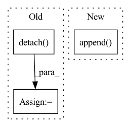

Pattern ID :1600
Before Change
n, c, h, w = xRaw.shape
// [n, c, h, w] -> [h, w, n, c]
*************** TODO: NEED DETACH? *******************
encoderIn = xRaw.detach() .permute(2, 3, 0, 1)
// encoderIn = xRaw.permute(2, 3, 0, 1)
// [h, w, n, c] -> [h*w, n, c]
if False:
encoderIn = self._position(encoderIn).reshape(-1, n, c)
// encoderIn = encoderIn.reshape(-1, n, c)
// [h*w, n, c]
x = self._encoder(encoderIn)
else:
x = encoderIn.reshape(-1, n ,c)
// similar to scaled dot-product attention
// [h*w, N, Cin], M * [h*w, n, k]
quantized, samples, logits = self._attention(x, temp, True)After Change
// [n, c, h, w]
quantizeds.append(deTransformed)
codes.append(sample.argmax(-1).permute(1, 0).reshape(n, h, w))
logits.append( logit.permute(1, 0, 2).reshape(n, h, w, k))
return quantizeds, codes, logits
In pattern: SUPERPATTERN
Frequency: 3
Non-data size: 3
Instances Fragment ID: 5449536
Project Name: xiaosu-zhu/mcquic
Commit Name: a4a40624c11a9779699f4a37cccb5b5ed8bc5048
Time: 2021-04-10
Author: xiaosu.zhu@outlook.com
File Name: src/mcqc/models/quantizer.py
M Class Name: TransformerQuantizer
N Class Name: TransformerQuantizer
M Method Name: forward(3)
N Method Name: forward(3)
M Parent Class: nn.Module
N Parent Class: nn.Module
M File Name: src/mcqc/models/quantizer.py
N File Name: src/mcqc/models/quantizer.py
M Start Line: 271
M End Line: 298
N Start Line: 504
N End Line: 534
Before Change
// calculate new memory only if sequence length buffer is full
if self.seq_len == t:
hidden_states = torch.stack(hidden_states)
new_mem = torch.cat((mem, hidden_states), dim=2)[:, :, -self.mem_len:, :].detach()
else:
new_mem = mem
return out, new_memAfter Change
for attn, ff, m in zip(self.attn_layers, self.ff_layers, mem):
x, mem_out = attn(x, mem = m)
x, = ff(x)
next_mem.append( mem_out)
out = self.to_logits(x)
next_mem = torch.stack(next_mem)
Fragment ID: 5449543
Project Name: lucidrains/compressive-transformer-pytorch
Commit Name: b5257bf3b0c5f8aed8ccce17883bfe9409c33909
Time: 2020-07-01
Author: lucidrains@gmail.com
File Name: compressive_transformer_pytorch/compressive_transformer_pytorch.py
M Class Name: CompressiveTransformer
N Class Name: CompressiveTransformer
M Method Name: forward(3)
N Method Name: forward(3)
M Parent Class: nn.Module
N Parent Class: nn.Module
M File Name: compressive_transformer_pytorch/compressive_transformer_pytorch.py
N File Name: compressive_transformer_pytorch/compressive_transformer_pytorch.py
M Start Line: 125
M End Line: 145
N Start Line: 145
N End Line: 159
Before Change
logit = logit - logit.mean(1, keepdim=True)
logit = logit / logit.std(1, keepdim=True)
meanLogit = logit.detach() .mean(1)
// [n, k], 3σ rule
bernoulli = Bernoulli(logits=meanLogit - 3.0)After Change
codebookQ = self._codebookQuery(codebook)
// [n, h*w, c]
x = self._encoder(encoderIn, codebookQ)
xs.append( x)
// [n, h*w, k]
logit = self._select(x)
// [k] Fragment ID: 5449532
Project Name: xiaosu-zhu/mcquic
Commit Name: ff056abb47b531e42496967adda543c562e1cefd
Time: 2021-05-12
Author: xiaosu.zhu@outlook.com
File Name: src/mcqc/models/quantizer.py
M Class Name: TransformerQuantizer
N Class Name: TransformerQuantizer
M Method Name: forward(3)
N Method Name: forward(3)
M Parent Class: nn.Module
N Parent Class: nn.Module
M File Name: src/mcqc/models/quantizer.py
N File Name: src/mcqc/models/quantizer.py
M Start Line: 505
M End Line: 554
N Start Line: 508
N End Line: 554